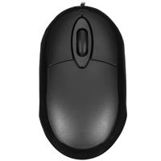

Описание товара

Мышь проводная Aceline CM-408BU черный
99 р
Характеристики
- Основной цвет - чёрный
- Подсветка - нет
- Общее кол-во кнопок - 3
- Максимальное разрешение датчика - 800dpi
- Материал изготовления - пластик
- Тип подключения - проводная
Подробное описание товара
Компактная мышь проводная Aceline CM-408BU выполнена в черном корпусе обтекаемой формы, что делает ее удобной для
каждого вне зависимости от того, какой рукой удобнее всего пользоваться. В основе манипулятора лежит светодиодный
датчик с поддержкой максимального разрешения 800 dpi: этот показатель остается неизменным, что делает мышь
незаменимой для решения повседневных задач. Подключение модели к компьютерным устройствам происходит при помощи
USB, поэтому проблем с совместимостью не возникнет. Длина кабеля подключения соответствует 1.2 м.
В управлении Aceline CM-408BU задействует три кнопки. Прорезиненное колесо прокрутки с ребристой поверхностью исключает
проскальзывание пальца, а это повышает точность пролистывания страниц. Сочетание глянцевого и матового пластика
позволяет достичь гармоничного оформления аксессуара. Тефлоновые ножки на основании мыши обеспечивают безопасное
и легкое скольжение по любым поверхностям.
Описание товара

Мышь проводная ExeGate SH-9026S [EX264098RUS] серебристый
150 р
Характеристики
- Основной цвет - серебристый
- Подсветка - нет
- Общее кол-во кнопок - 3
- Максимальное разрешение датчика - 1000dpi
- Материал изготовления - пластик
- Тип подключения - проводная
Подробное описание товара
Сочетание черного и серебристого оттенков позволит мыши проводной ExeGate SH-9026S
стать единым целым с уже присутствующей на вашем столе периферией. Простой и надежный,
этот аксессуар покорит плавным скольжением и точным наведением курсора – столь впечатляющим
характеристикам он обязан оптическому светодиодному сенсору с максимальным разрешением 1000 dpi.
Используя колесико прокрутки, которым предусмотрительно оснащена мышь проводная ExeGate SH-9026S, вы
сможете ознакомиться с различными файлами и пролистать страницы Всемирной паутины. Несомненным достоинством
аксессуара является пластиковый корпус с матовой поверхностью, на которой не отпечатываются различные загрязнения
и не оседают частицы пыли. Кроме того, она не провоцирует скольжение вашей помощницы в руках, тем самым обеспечивая
возможность комфортного решения различных задач. Для подключения к ПК или ноутбуку используется интерфейс USB Type-A.
Описание товара

Мышь проводная A4Tech Bloody V5 черный
900 р
Характеристики
- Основной цвет - чёрный
- Подсветка - есть
- Общее кол-во кнопок - 8
- Максимальное разрешение датчика - 3200dpi
- Материал изготовления - пластикб резина
- Тип подключения - проводная
Подробное описание товара
Многорежимная игровая проводная мышь A4Tech V5 сочетанием
самых передовых технологий с креативным дизайном покорит и опытного геймера,
и новичка. С манипулятором универсальной формы даже левша будет чувствовать себя
великолепно, не говоря о правше. Покрытие Soft touch, ставшее неотъемлемым элементом
для всех достойных моделей, обеспечит качественный захват рукой и исключит проскальзывание
пальцев при увлекательной игре в самый неподходящий момент.
A4Tech V5 по праву считается одной из самых точных благодаря автоматическому подавлению отдачи,
возможности стрельбы без остановки и регулировки траектории. Такое великолепие обеспечивают незаурядные
технические характеристики мышки: сверхскоростной оптический датчик с большим диапазоном выбора разрешений
(200–3200 dpi) и откликом, достигающим в нужный момент 1000 Гц, восемь управляющих кнопок, в том
числе настраиваемых пользователем, и встроенная память.